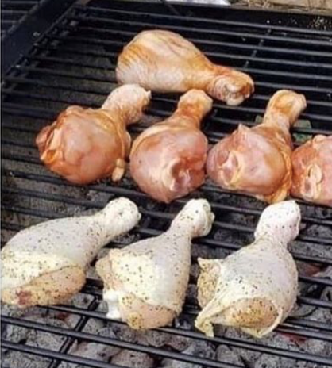

Like I talked about before I have a lot of pets. More specifically cats, dogs, horses, and chickens.
My family has two Rottweilers and their names are Margerett and Annebelle. However, we call them Maggie and Belles for the most part.
The horses are what is next on the chopping block. Like the previous animals we have two of them. Tailor, a white horse and Tank, a brown horse.
Lastly, we have a handful of hens, more precisely 6. They do not really have names if I will be honest.
